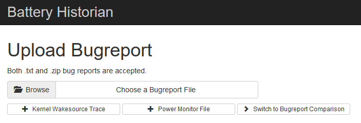

At GREENSPECTOR, our R&D teams have been working for several years on the energy measurement of smartphones. Several years of research and innovation that allow us today to offer a unique product to simply measure the energy data of smartphones. However, there are tools that can complete the analysis of the behavior of the battery and the phone. Battery Historian is one of them.
Battery Historian is a tool developed by Google, launched in 2016, which allows one to analyze the behavior of a phone and more precisely to review information and events related to the battery. This is, we will see, an expert analysis tool. Several metrics and insights are available: radio cells, communication… all this correlates with the battery level.
Battery Historian usage tutorial
1) First of all, install Docker. Docker is free software that automates the deployment of applications in software containers. Personally, I am on Ubuntu so I use the quick install scripts:
curl -fsSL get.docker.com -o get-docker.sh
sudo sh get-docker.sh2) From your command line interface, launch the Docker image:
docker run -d -p 9999:9999 bhaavan/battery-historian3) You can now access Battery Historian from localhost:9999
You must now retrieve the detailed information of your phone’s system. For this, you must have previously installed the Android SDK and activated the developer mode on your phone.
4) Plug your phone into USB to your PC.
5) From your command line interface, retrieve the phone’s system information file with the following command:
adb bugreport bugreport.zip6) You can now upload the file bugreport.txt in Battery Historian

You will then get your analysis report:

You can now observe the battery level on the right axis (from 0 to 100%), this level is represented by the black curve. On the left axis and the other lines, you will find all other information about the metrics and insights reported by the system.
Below this graph, you will find statistics of all information about specific applications or system information of your phone. Allowing you an overview of what is happening with your device. For example, you can analyze the impact of a particular application on the battery during use

Our opinion on Battery historian
Battery Historian is a powerful tool that allows you to analyze the behavior of the battery and most importantly understand what is happening in the system. But it is also a complex tool. There is a lot of information and it quickly becomes difficult to find the causes of the discharge. In addition, since the tool is based on the battery level, it is necessary to allow the application you want to analyze to run for a while. It is therefore a useful tool for a detailed analysis of the system but to put in expert hands.